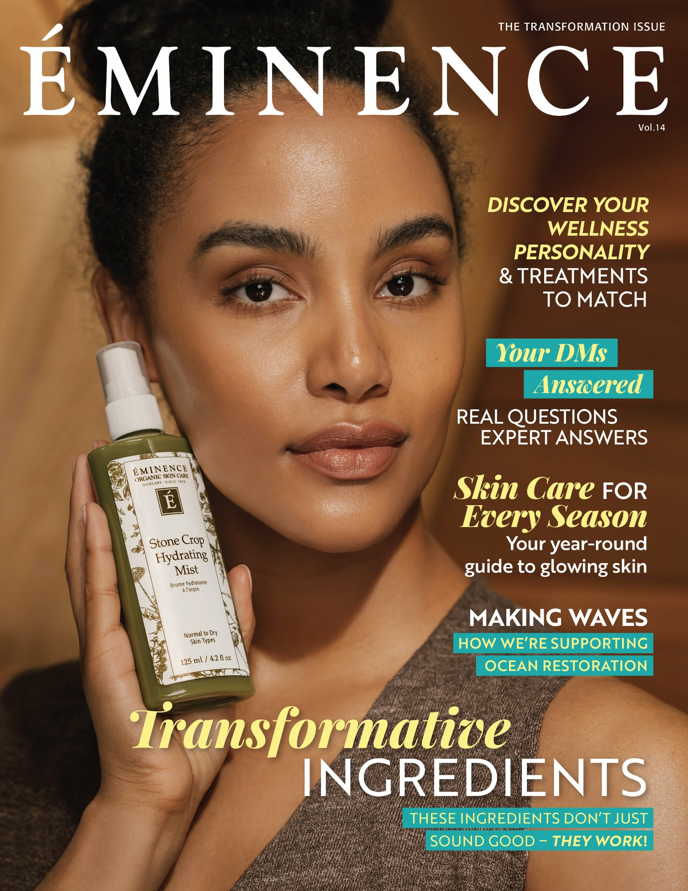
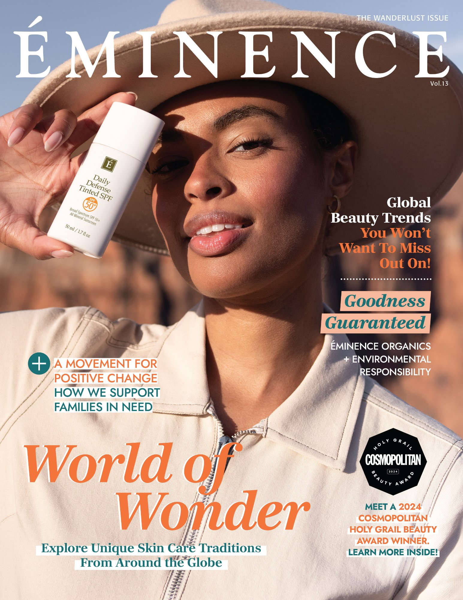
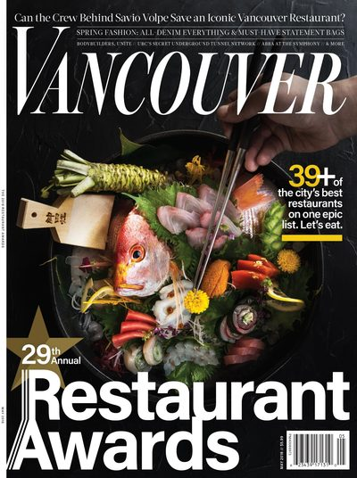
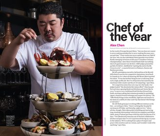
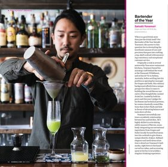
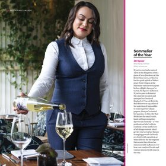
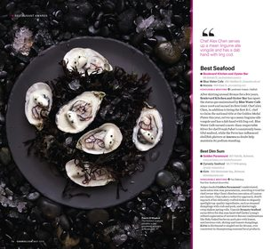

A collection of photographic work exploring place, memory, and cultural landscapes.

For the 2026 issue of Éminence Magazine, I collaborated with the creative and external production teams to direct and produce the cover image representing the theme of transformation. My role focused on aligning concept, visual direction and production logistics to ensure the final image translated clearly across both print and digital formats. This included coordinating the creative brief, guiding the visual direction during the shoot and ensuring the imagery remained consistent with the brand's visual standards and storytelling. The final cover presents a refined product-focused portrait that reflects the brand's emphasis on botanical ingredients and skin transformation.

For the 2025 issue of Éminence Magazine, I led the end-to-end production of the cover image as part of a larger launch photoshoot. The shoot took place in Utah and was designed to reflect the theme of global exploration and natural beauty. I was responsible for the full production process, including location coordination, styling, photography, post-production, and final asset delivery. The cover image was captured as part of the campaign shot list, ensuring the visual storytelling aligned with the broader launch assets used across digital and print channels.

Commissioned editorial photography for the 29th Annual Vancouver Magazine Restaurant Awards. In addition to photographing the cover image, I produced multiple editorial features across the awards section, including portraits of the winning Chef of the Year, Bartender of the Year, and Sommelier of the Year in Vancouver, BC.




Documentary photograph selected for the cover of Living Religions, published by Pearson. The image reflects the book's focus on lived religious traditions and everyday expressions of faith around the world.